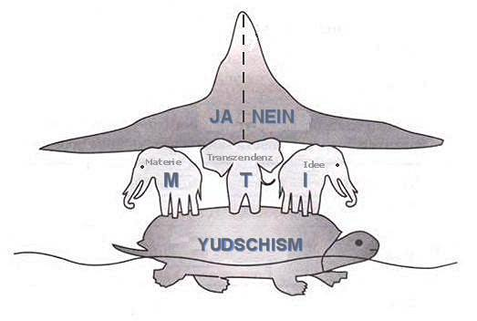
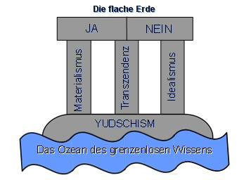
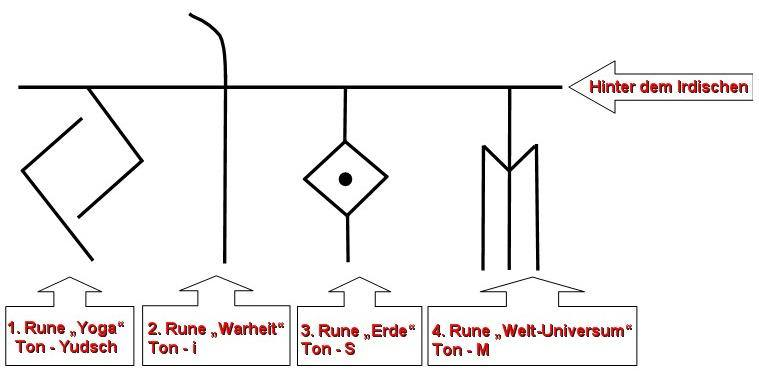

Die wedische bildliche Weltwahrnehmung
Die slawisch -arische Völker hatten ihre eigene besondere Wahrnehmung der Umwelt aufgezeichnet, diese unterschied sich von der Wahrnehmung anderer Völker. Man soll die Weltwahrnehmung mit der Weltanschauung nicht verwechseln, denn die Weltanschauung ist die Ansicht auf die Welt, d.h. die Weise der Beobachtung der Welt. Aber die russo-arische Völker beschäftigten sich nicht nur mit der Beobachtung der Welt, sondern sie nahmen seine ganze Mannigfaltigkeit wahr und machten sie zu Bildern. Weil die symbolische Gestalt (Bildnis, Symbol) viel mehr Informationen als Phonetik, die Gesten (Gebärden) oder die Seh- und Gehörwahrnehmung vermittelt.
Die alte Weisheit muss man nicht nur mit Verstand erkennen, man muss sie mit seinem Herzen annehmen und sich in jede Gestalt einfühlen können. Aber nur wenn, die Information durch das Herz, der Geist, die Seele, der Vernunft und dem Verstand die Lebenserfahrung formt, wird sie zur Lebensweise (Lebensart). die Information wird dann zu wedischem Wissen!
Unsere Vorfahren haben die Kinder in den Grundlagen der Weltwahrnehmung ausgebildet und dem Kind den Aufbau der Erde auf folgende Weise beschrieben: die Welt hat die Form einer Schildkröte, die im grenzenlosen Ozean schwimmt, auf ihr stehen drei Elefanten und halten die flache Erde (Abb. 1). Auf dem Bild sehen Sie eine wedische, bildliche (symbolische) Darstellung der Aufbau der Erde.


Abb. 1
Die modernen Menschen verstehen nicht den Sinn, der von den Vorfahren in das vorliegenden Bildnisse gelegt wurde. Aus zweierlei Gründen: sie verfügen nicht über das bildliches (symbolische) Denken oder wissen nichts über den Sinn dieser Gestalt (dieses Bildes). Diese Gestalt wird so verstanden: die flache Erde - ist die Gestalt des flachen Denkens des Menschen (die zweidimensionale Vernunft oder Dualität d.h. unter den Kategorien "JA" und "NEIN". Der Mensch, der auf der Erde lebt, bekommt das Wissen und die Weisheit von einem der drei "Elefanten", d.h. die Elefanten stehen sinnbildlich für Stützsäulen von der Grundlagen der Weltanschauung. Diese sind: der Materialismus, der Idealismus und die Transzendenz (Mystizismus), d.h. die physische (körperlich), seelische (Gefühl) und geistige Wahrnehmung (dass, was man nicht körperlich, nicht seelisch wahrnehmen und empfinden kann).
Seinerseits bekommen "die Elefanten" die Informationen von "der Schildkröte", sie ist der - YUDSCHISM(die Weltwahrnehmung, russ. ЮДЖИЗМ) und ihre Grundlage ist die allgegenwärtige und alles durchdringende Energie. Und "die Schildkröte" bekommt die Weisheit aus dem Ozean des grenzenlosen Wissens und der absoluten Wahrheit.
So entstehen die folgenden Schlussfolgerungen:
GANZHEITLICHES SLAWISCH – ARISCHES SYSTEM - YUDSCHISM (die Weltwahrnehmung, d.h. die Wahrnehmung aller Systeme zusammen) - die Slawen und Arier
TRANSZENDENTES SYSTEM - die Hindus, die Buddhisten, die Sintoiten
IDEALISTISCHES SYSTEM - die Araber, die Chinesen
MATERIALISTISCHES SYSTEM - ist ein westliches System der Weltanschauung, die Amerikaner, die Europäer u.a.
Das materialistische System der Wahrnehmung verwenden hauptsächlich die Menschen der 1. Kategorie (Niveau) der Entwicklung - 3 Chakren Mensch (Dreiwertiger).
Der seelische Mensch der 2. Kategorie (Niveau) - 7 Chakren Mensch (Siebenwertiger) gehört zum idealistischen System.
Das transzendente System der Wahrnehmung – ist bei Menschen der 3. Kategorie (Niveau) - Transzendenter Mensch oder 9 Chakren Mensch (Neunwertiger) zu finden.
Die Slawen verwendeten alle Systeme, da sie das neunwertige Niveau bereits von der Geburt haben und sich bis zum sechzehnwertigen (hexadezimalen)Niveau der Asen entwickelten.
YUDSCHISM – DIE WELTWAHRNEHMUNG - DIE SYMBOLISCHE WAHRNEHMUNG
Dieses Wort wird mit vier Runen geschrieben (Abb. 2) – die erste Rune „YUDSCH“ (russ. ЮДЖ) wird mit der Rune für Yoga geschrieben: die Richtung des Runensymbols zeigt zu einer Seite und zu der anderer Seite und ist wie die Erweiterung des Bewusstseins in beide Seiten aber dabei – vereinigend. Die erste Rune zeigt zwei entgegengesetzte Strukturen. Erinnern Sie sich an die ostchinesisches Symbol YIN und YANG – zwei entgegengesetzte Kräfte.

Abb. 2
Bei den Slawen und Arier hieß dieses System HА und ТHА. HА - ist eine positive Kraft, deshalb wenn der Menschen sich freut und lacht, kommt bei ihm in der lautlichen Form HA-HA (die positive emotionale Struktur) raus. Entgegengesetzte Kraft ist die ТHА bildet, so als ob würde irgendwo HА geschlossen verhärtend bleiben. Deshalb, wenn beim dem Menschen in lautlichen Form THA-THA rauskommt: dann weint oder schluchzt der Mensch. Das heißt, dass die Freude und der Kummer zwei Gegenseiten sind. Und wenn es sich alles verbindet – wird es zu HATHA – der Yoga, die Vereinigung zweier Gegenseiten.
Die zweiten Rune „ISM“ (russ. ИЗМ) – ist wie die Wahrheit der irdischen Welt. Und hier ist die Wahrheit vereinigt d.h. nicht positiv oder negativ, sonder beide in einer, ein Paar (männlich und weiblich) und stellt die Form der irdischen Welt - Wahrheit da. Es gibt weitere Wahrheiten: die geschriebene Wahrheit, die Ahnenwahrheit, die Natur Wahrheit, die Universum Wahrheit und diese ist die ganzheitliche Irdische Wahrheit der Midgard - Erde.
Мidgard - ist ein altes Titelwort für unsere Erde. Als erstes eine kleine Berichtigung: unsere Vorfahren haben das Wort „Planet“ nicht benutzt es ist ein griechisches Begriff und bedeutet der umherwandernde Stern. Es gab bei unsere Ahnen nichts was im nirgends wo umherwandern und umherirrt, es hatte alles sein Platz, seine Umlaufbahn.
Damit für den modernen Menschen die Erde nicht mehr "flach" ist und als vollwertige, räumliche Welt erscheint - muss er die alte Weisheit der Vorfahren studieren und sich bemühen die flache Wahrnehmung von der bildliche Gestalt zu ändern. Der Mensch soll beginnen die bildliche (symbolische) Sprache der Vorfahren zu erforschen, denn noch bis zum Anfang des XIX. Jahrhunderts sprachen unsere Völker in der bildlichen Sprache, in der jeder Buchstabe die bildliche Gestalt und Bedeutung hatte.